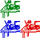
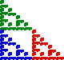
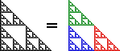

| This convergence seen in the previous section occurs
in a much more general setting than the gasket rules. Nevertheless, for concreteness we
illustrate this converge using the gasket rules.
Because all the transformations are applied at each iteration, this is called
the determinisitc algorithm. |
| Specifically, suppose T1, ..., Tn
are contractions, and P0
is any picture. For example, |
| T1(x,y) = (x/2, y/2), |
| T2(x,y) = (x/2, y/2) + (1/2, 0), |
| T3(x,y) = (x/2, y/2) + (0, 1/2), | |
and P0 = |
|
|
| Generate a sequence of pictures |
| P1 = T1(P0) ∪ ... ∪ Tn(P0) |
 |
| P2 = T1(P1) ∪ ... ∪ Tn(P1) |
|
| ... | |
| Pk+1 = T1(Pk) ∪ ... ∪ Tn(Pk) |
 |
| ... | |
|
| This sequence converges to a unique shape, P, the only (compact) shape
invariant under the simultaneous application of T1, ...,
Tn: |
| P = T1(P) ∪ ... ∪ Tn(P) |
That is, |
 |
|
| Because of this convergence property, P is called the attractor
of the IFS {T1, ... , Tn}. |